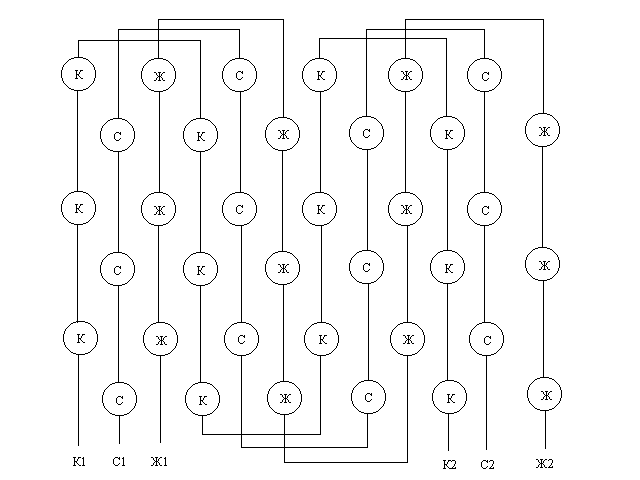
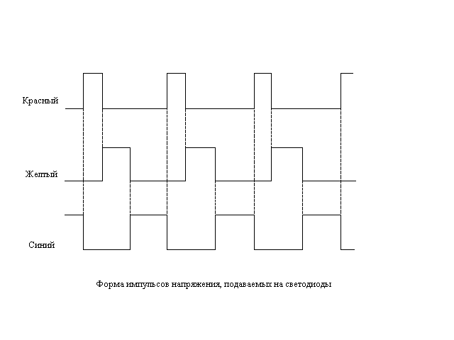

Прожектор (светильник) с изменяемым цветом свечения на светодиодных индикаторах

Прожектор состоит из светодиодов разного цвета свечения, объединенных в группы. Вариант объединения показан на рисунке. К - светодиод красного свечения, Ж - светодиод желтого или зеленого свечения, С - светодиод синего свечения. Светодиоды одного цвета соединяются последовательно. Цвет свечения прожектора изменяется регулированием скважности импульсов, подаваемых на группы светодиодов разного цвета. Частота следования импульсов должна быть достаточно большой, чтобы срабатывал эффект инерционности зрения.

Возможная сфера применения подобного светильника - регулируемое по спектру освещение теплиц вне временных границ светового дня. Источником энергии может служить аккумулятор, подключенный к солнечной батарее (может быть дополнена ветрогенератором) и накапливающий энергию в течение светового дня. После захода солнца светильник включается на заданное время и с заданной программой изменения цвета свечения.
27.10.2003
19.08.2017
03.11.2018
Альтернативные источники
энергии
Компьютеры и
Интернет
Магнитные поля
Механотронные системы
Перспективные разработки
Электроника и
технология